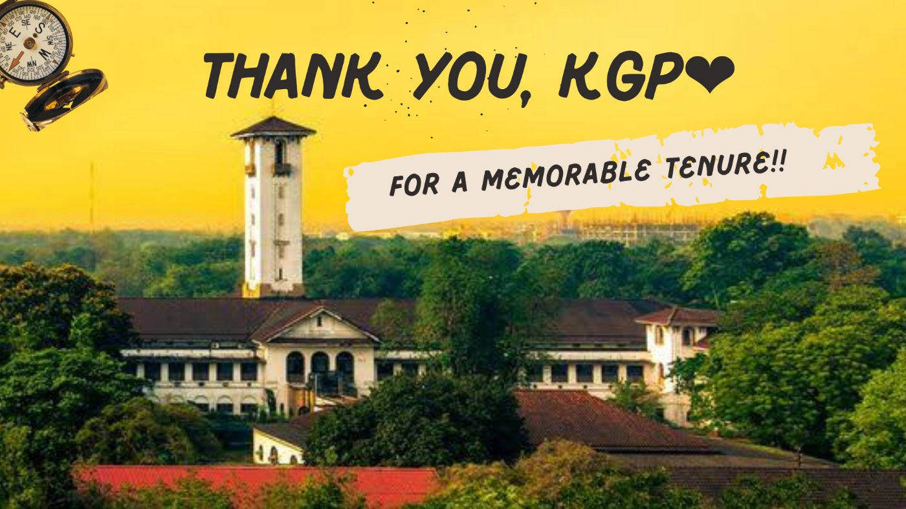
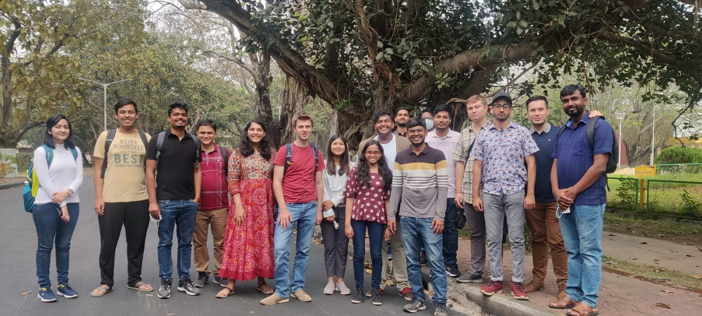
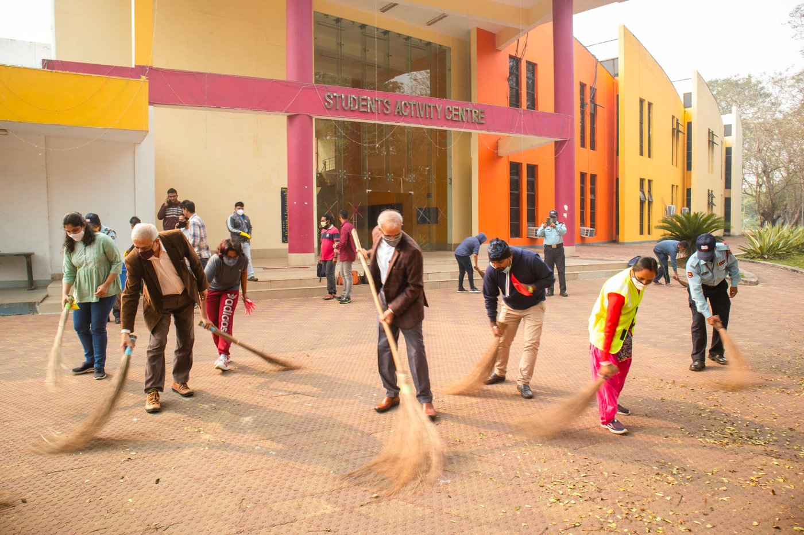
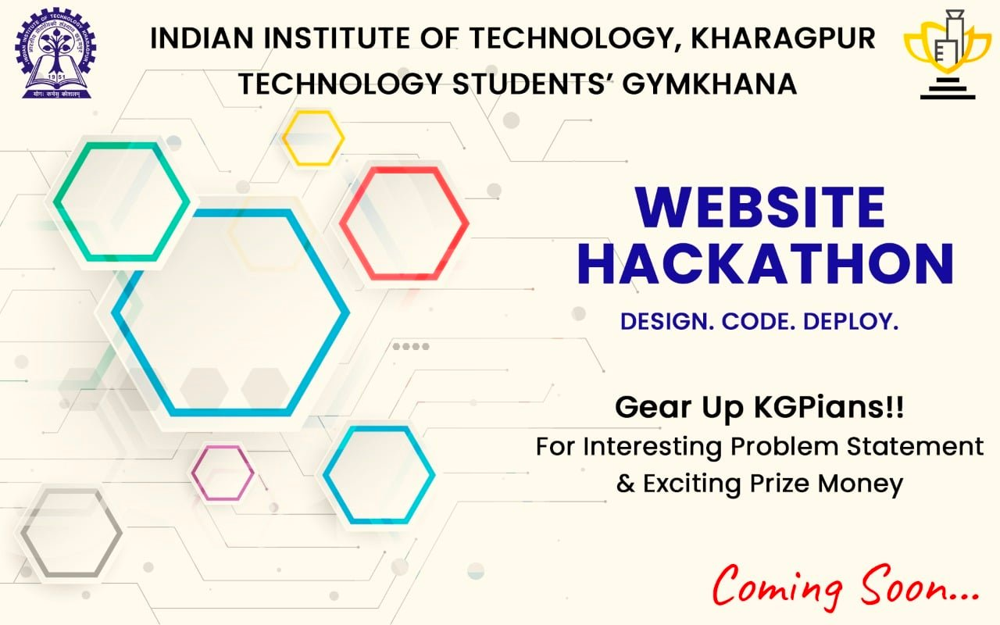
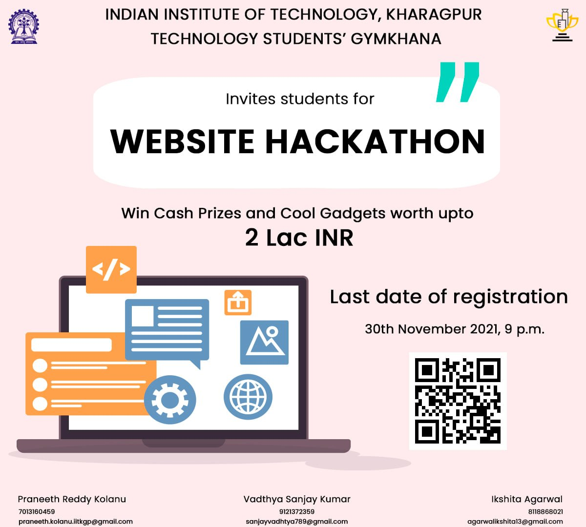
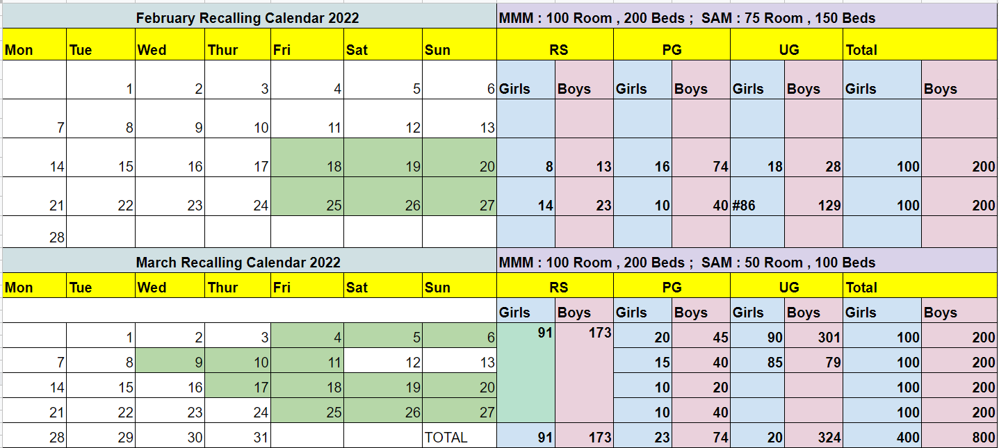

Tenure review · 2021–22
Vice President, Technology Students' Gymkhana, IIT Kharagpur
From calling students back to campus batch by batch, through the winter lockdowns, to Kshitij and Spring Fest: a record of what my team and I worked on, from the first day of the tenure to the last.
Start reading Original review on Notion
students back on campus in the first five recall batches (Aug–Sep 2021)
final-year PG and M.Sc. students approved to return
students on campus by the end of December 2021
people on campus fully vaccinated through the free second-dose drive
COVID cases coordinated in January 2022, with the Students' Senate
placement offers in 3 days, a milestone across all IITs
Councils
Hall Councils
- Hall President
- Second Senate Member
- General Secretaries: Sports and Games, Social and Cultural, Technology, Students' Welfare, Maintenance, Alumni Affairs
Society Affairs Council
Committees
Mess Monitoring Committee
- Central student committee: VP, General Secretaries, PRC
- Hall teams: Hall President, General Secretary Maintenance and at least 3 members from each hall
- First mess visit: 10 September 2021
Hospital Visit
COVID Protocol Committee
Distribution of abandoned cycles
Eateries rating
Proposals update
What happened to the proposals from the campaign. Read the proposals document.
- Proposal 1: Safeguard CommitteeCases raised with the Dean, SA and the PIC, CC.
- Proposal 2: Career Orientation ProgramProgram material
- Proposal 3: Mobile applicationTaken forward through the Website Hackathon, the Developers' Society, IIT Kharagpur and the Apnainsti mobile app.
- Proposal 4: Research Scholar Induction Program
- Proposal 5: Logistic changes to facilitate campus reopeningA back-end workflow was designed for smooth handling of the logistics of the recalling process.
Initiatives
RS–PG Mentorship Program
Members: VP, PG Representative and the PG Department Representatives.
RS and PG Coordinators
PG and RS coordinators selected for Sports and Games, Social and Cultural, Technology and Students' Welfare.
Unnat
An international students meetup and inter-disciplinary meetups.

Renaming the Counselling Centre
"It's okay. Let's talk." Students were invited to give the Counselling Centre a name.
Constitution Day

Website Hackathon
Design. Code. Deploy. Cash prizes and gadgets worth up to 2 lakh INR.


Major events
Central Illumination
To keep the culture of KGP alive: an extraordinary Central Illumination with 500 students on campus, pulled off in less than 15 days by the General Secretaries, Social and Cultural, TSG, with active coordination of the Students' Senate.
Placement coordination
A record-breaking 1,000 offers in 3 days, a milestone across all IITs, with the Career Development Centre team, Placement Committee members and the Department Representatives.
Induction Program for UG first years
Active coordination from the entire Gymkhana council and the UG council.
Kshitij and Spring Fest
An online Kshitij, Asia's largest techno-management fest, and a hybrid Spring Fest. The fests brought back the joy and added colour to the lives of KGPians.
Gymkhana Championship
A combined effort by the Sports and Games, Social and Cultural, and Technology committees: a tireless attempt to pass the prestigious GC culture on to the junior batches.
Winter Sports Camp
The first camp of its kind, conducted by the General Secretaries, Sports and Games, TSG.
Offline Convocation
A stellar farewell for the batch of 2021. We love you, seniors!
COVID cases coordination
Around 800 cases managed in January, including students, faculty and staff.
SAMYOG – Connect IIT Kharagpur
Month-long sessions to keep the campus community engaged during the lockdowns.
Also on the calendar
Also served on
Campus Recalling 1.0
A much desired one
Bringing students back to an empty campus, with limited rooms, in batches. Everything a returning student needed was put together in the Quick Campus Guide (PDF).
Resource-constrained batches
| Batch | Called | Arrived | Girls | Boys | UG | PG |
|---|---|---|---|---|---|---|
| Batch 1 · Aug 2–6 | 162 | 117 | 28 | 89 | 103 | 14 |
| Batch 2 · Aug 17–20 | 162 | 124 | 5 | 119 | 94 | 30 |
| Batch 3 · Sep 1–4 | 164 | 127 | 12 | 115 | 120 | 7 |
| Batch 4 · Sep 11–14 | 125 | 107 | 15 | 92 | 107 | 0 |
| Batch 5 · Sep 21–24 | 58 | 57 | 7 | 50 | 56 | 1 |
| Total, 2021 | 671 | 532 | 67 | 465 | 480 | 52 |
Then, phase by phase
- Approval for 1,392 final-year PG and M.Sc. students
- Approval for final-year UGOpen slot 1: 27–29 October 2021
- Second phaseResearch scholars up to 2018–19, single scholars and PMRF scholars
- International students called back
- Pre-final-year UG called back
- Open slot 2: 26–30 December 2021Everyone up to the 2020 batch who was doubly vaccinated and willing to come back. Some of the 2020-batch girls could not be called back because of the limited accommodation capacity.
Campus Recalling 2.0
A desired one

Vaccination and Lockdowns
Vaccination drives
Free second-dose drive
In coordination with IIT TA, 27 August – 9 September. About 3,000 people on campus are fully vaccinated.
Regular drives at BCRTH
In coordination with Dr. Mausam Manna. Covaxin is available at Hijli Medical Hospital.
Lockdowns
Not so desired one
- Lockdown 1: hall lockdown, 26–30 December 2021About 2,200 students had come back to campus.
- Lockdown 2: strict lockdown6 PM, 31 December 2021 to 6 AM, 3 January 2022 · Documents
- Lockdown 3: self-imposed lockdown4–10 January 2022
- Lockdown 4: self-imposed lockdown11–17 January 2022
- Lockdown 5: strict lockdown18–23 January 2022 · Documents
- Lockdown 6
- Unlock
Through January, around 800 COVID cases (students, faculty and staff) were coordinated with active support from the Students' Senate and all the student volunteers involved. SAMYOG – Connect IIT Kharagpur ran month-long sessions to keep the campus community engaged during the lockdowns.
Summing it up!
There are many people whom I can't thank enough during this journey.
Thanks to Anshika Shristi, Astha Jakher and Neha Chandra for always being there!
Being the first female to contest for the position of Vice-President, Technology Students' Gymkhana, IIT Kharagpur, it had surely come with its own challenges regarding funda. These four people stood like the pillars of my candidature and ensured I never ran out of resources and confidence. I thank Sudhir Singh Bhadauria (CY | 2021 | LLR), Sumit Sen (GG | 2022 | VS), Rana Madhavendra (GG | 2022 | RP), Divyam Sharma (HS | 2022 | MMM) and Rahul Singhal (CH | 2021 | NH) from the bottom of my heart for all the time, energy and efforts during the process.
Thanks, Ninaad Neeraj Lohakare (ME | 2021 | PH), TYSS Santosh (CS | 2020 | RP) and Piyush Agarwal (HS | 2021 | RK), for all the guidance related to major events of the Gymkhana and the Institute. Thanks for your invaluable suggestions and feedback, Mahima Karumanchi (EC | 2020 | SNIG) and Akash Bhardwaj (GG | 2021 | MS).
Yogesh Kanik (HS | 2022 | RP), Ninad Sanjay Patil (ME | 2022 | NH), my Gsecs who had known me throughout my tenure as Secretary, Knowledge Cup and had been there with me during the process. You always bring a wave of positive energy that motivates me to move onwards and upwards. Aditya Singhania (IM | 2021 | VS), you are my personal counsellor and go-to-person always <3 Thanks, Soumya Patel (MT | 2022 | MMM), Mayank Manjeara (MT | 2021 | HJB), Devang Upadhyay (MI | 2022 | MMM), Tapasya Pratap Singh (AR | 2022 | SNIG), Shruti Priya (PH | 2022 | MT), Shriyadita Roy (HS | 2022 | MT), Shivam Kumar Jha (CS | 2022 | BRH) for scrutinizing my proposals and giving your valuable feedback!
Thanks for believing in me, Raman Shaw, Neeraj, Devendra Patidar, Chetan Deshmukh, Rohan Gaggad, Saurabh Gupta, Dubey, Devarshi, Pankhuri, Kavita Sharma, Akshit, Nachiketa Rajhans, Apar Sharma, Monidipa Sen gupta and Shrish Shandilya.
Can't thank my pillars, Yashraj Gupta (CS | 2022 | MS), Dasari Sai Nishanth (ME | 2022 | LLR), RSS Kiranmayee (ME | 2022 | MT), Vaishnavi Manusani (MA | 2024 | MT), and Praneeth Reddy Kolanu (AE | 2024 | LLR) enough for your 24*7 assistance and constant push to pursue the dream! Also, the homies, Sumanth Reddy Challaram (GG | 2023 | LLR), Abhilash Dachepally (GG | 2023 | HJB), Rajnandni Sharma (IM | 2023 | MT), Ishita Agrawal (AG | 2022 | MT), Kashish Gupta (PH | 2023 | MT), Suman Kumari (HS | 2023 | MT), I love you all!